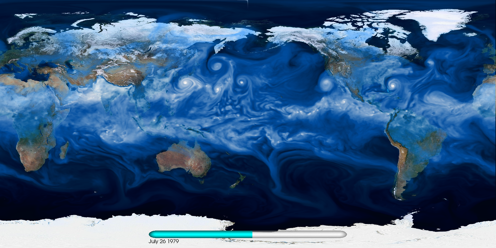

Results
Homepage
CESM model
Practicals
Results

Setup on norStore (cruncher)
Post-processing and visualization tools
CDO (Climate Data Operators)
NCO (netCDF Operators)
NCL (Ncar Command Language)
Ncview: a netCDF visual browser
Panoply netCDF, HDF and GRIB Data Viewer
Python programming language
Using CDO and NCO for data processing
Plotting using python
Useful Shell command (loops, etc.)